LifeCounter 2.5.0
Esta versão foi feita pra mesa de verdade: 4 ou 5 pessoas, 40 de vida, partidas de duas horas. Quem cai continua na tela sem roubar espaço, o app pergunta quem matou e como (e isso vira estatística), o sorteio de quem começa lembra das últimas partidas, a mesa vira relógio quando ninguém mexe, e o pódio conta a história da partida numa linha do tempo.
- Quem começa com justiça
- Quem matou e como (pergunta ao cair)
- Card de eliminado encolhe
- Pódio com linha do tempo
- Descanso de tela com relógio
- Modo só vida
- Glossário no toque
- Perfil: como você morre e como elimina
- Dano de comandante: pílula e folha
- Trocar de lugar: engrenagem e Lugares
- Configurações reorganizadas
- Microfone: fora dos cards e com opção de ocultar
- Nos bastidores e como atualizar
1. Quem começa com justiça sorteio e roleta
O app passa a guardar quem começou cada partida (o jogador da vez quando o turno 1 termina). O Sorteio e a Roleta pesam o resultado contra quem começou mais nas últimas 10 partidas da mesa: quem nunca começou tem peso cheio, quem começou uma vez tem um terço, duas vezes um quinto, e assim por diante. Os sorteios de habilidade (reflexo, corrida de toques, dado de cada um, mata-mata) continuam puros.


2. Quem matou e como pergunta ao cair
Quando alguém chega a zero (ou 21 de comandante, 10 de veneno, ou é marcado como morto), abre uma pergunta curta: quem matou? (os outros jogadores, ou "ninguém / ele mesmo") e como? (combate, dano de comandante, combo, veneno, mill, desistiu, outro). O app já pré-seleciona o que sabe: dano de comandante marca o atacante e o motivo, veneno marca veneno, "o Reis matou o Zé" por voz marca o Reis.
- Dá pra responder "Depois" e corrigir a qualquer momento tocando na tira do eliminado.
- A resposta vai pro log da partida, pro ranking (eliminado por, motivo) e pras estatísticas do perfil.
- Só pergunta pra quedas recentes: ao retomar uma partida antiga de outro aparelho não fica perguntando sobre mortes velhas.
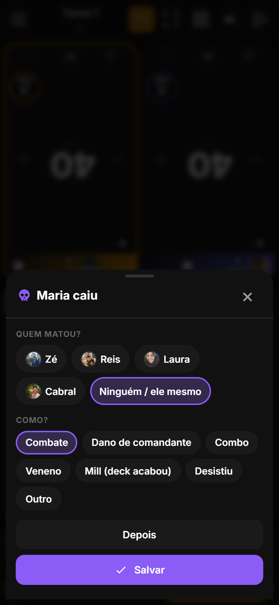
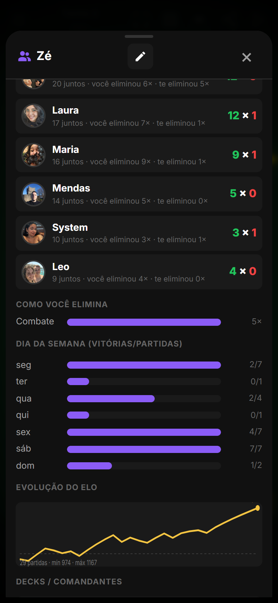
3. Card de eliminado encolhe continua visível
Quem cai vira uma tira fina embaixo da mesa com foto, colocação (5º, 4º…), quem matou e como. Os vivos passam pro layout de uma pessoa a menos: numa mesa de 5, os 4 que sobraram ficam em 2×2 com o dobro do espaço. No modo mesa as rotações são refeitas sozinhas. A tira tem dois botões: corrigir a morte (caveira) e reviver (coração), que devolve o card ao tamanho normal e o layout de antes.
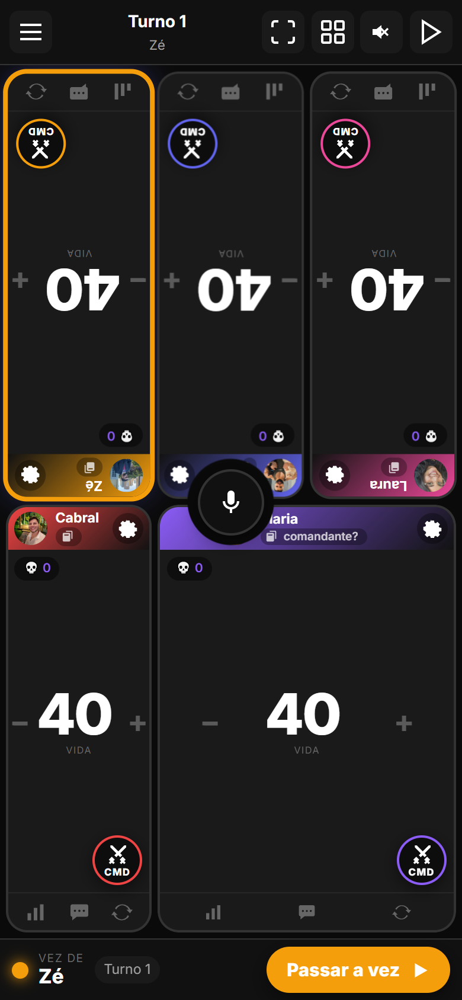
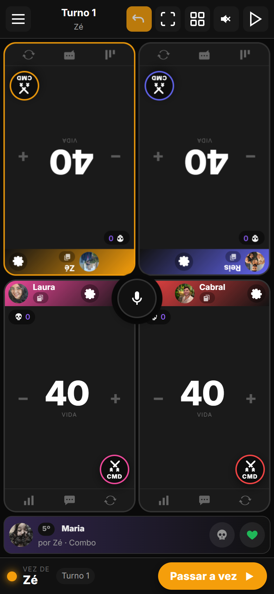

4. Pódio com linha do tempo
A tela de vitória ganhou uma régua da partida, de 0 até a duração final, com marcas a cada 30 minutos. Nela aparecem cada queda (bolinha com a inicial e a cor do jogador; o toque mostra colocação, turno e hora), as trocas de líder (losangos na cor de quem assumiu a ponta) e o maior swing de vida. Embaixo, os resumos: "Virada: Zé assumiu a ponta no turno 9 (1h12)", "1ª queda: Maria aos 38 min", "3 trocas de líder", "Maior swing: Laura −18 no turno 9".
- A mesma linha do tempo aparece no detalhe da partida no Histórico, pra qualquer partida já salva com log.
- A imagem compartilhada (botão de compartilhar na vitória) ganhou a linha das quedas.


5. Descanso de tela com relógio toque desbloqueia
Partida de duas horas, celular no meio da mesa, ninguém mexe por um tempo: a mesa vira uma tela preta (boa pra bateria em tela OLED) com o tempo de partida em números enormes, a hora atual pequena, o turno, de quem é a vez e a vida de cada jogador. Qualquer toque volta pra mesa, e o toque de desbloqueio não vaza pro card que estava embaixo.
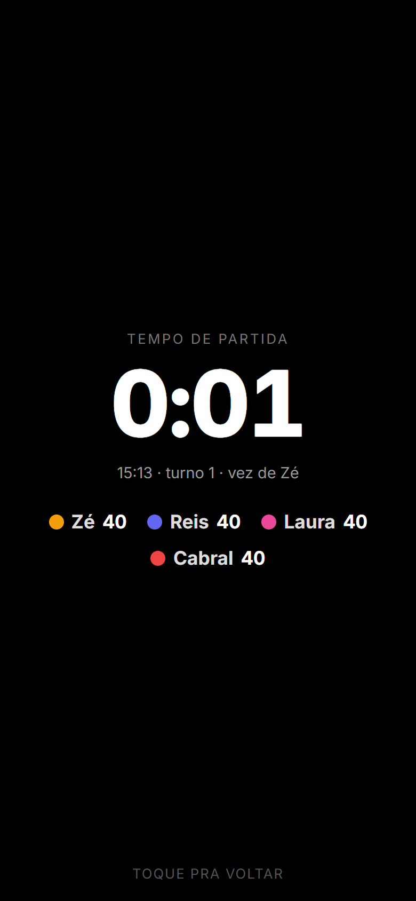
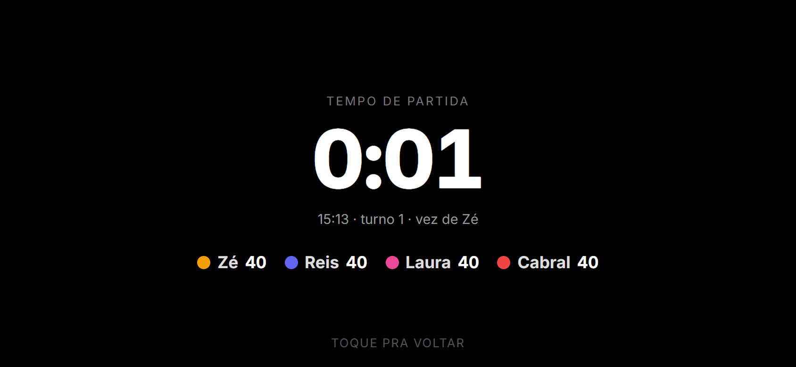
6. Modo só vida
Pra mesa rápida, gente nova ou quando só interessa o número: o card fica só com o número gigante e os botões de mais e menos. Somem contadores, comandante, barras de dano, rodapé e sombras. O resto continua funcionando por trás (dano de comandante por voz, por exemplo).
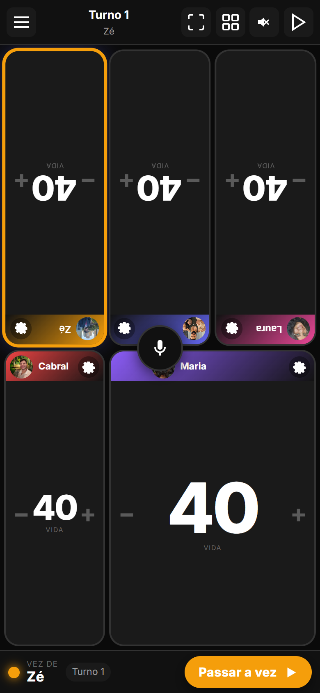
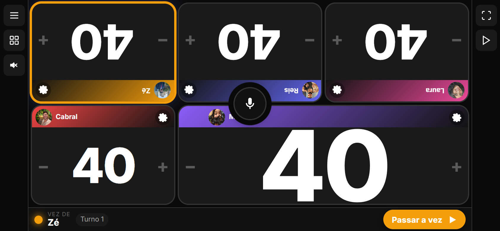
7. Glossário no toque
Na ficha do comandante, na carta mostrada pelo juiz e na resposta do juiz, as palavras-chave (ward, flash, menace, deathtouch, trample, hexproof…, em inglês ou em português) ficam sublinhadas. O toque abre a explicação em português na hora, sem internet e sem IA, a partir da base de 49 keywords que já existia no app. Se precisar de mais, o botão "Perguntar ao juiz" manda a pergunta pro juiz de IA.
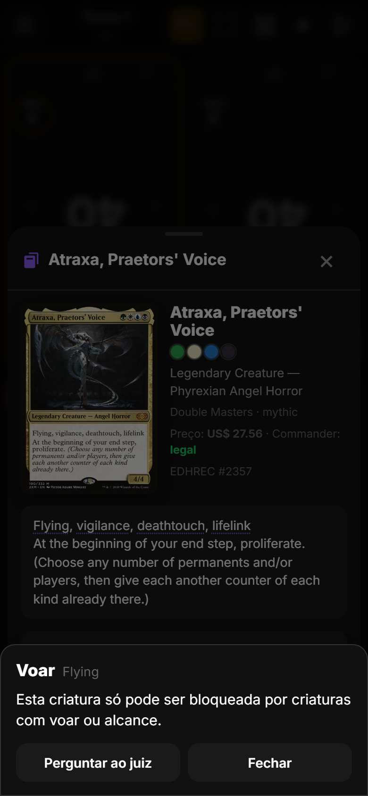
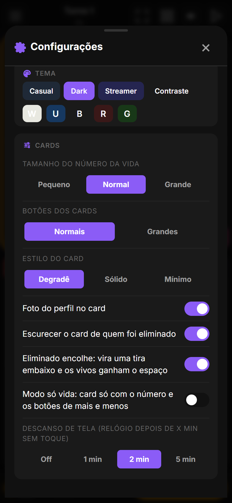
8. Perfil: como você morre e como elimina
Com o motivo das mortes registrado, o perfil ganha duas barras novas: Como você morre (combate, comandante, combo…) e Como você elimina. Também mostra quantas partidas você começou e a porcentagem. Tudo calculado no servidor a partir das partidas salvas; partidas antigas sem motivo não entram.
9. Dano de comandante: pílula e folha no lugar da bolinha
A bolinha "CMD" virou uma pílula larga que já mostra o maior dano de comandante recebido, na cor de quem está batendo (com "+1" quando há mais de um atacante). Com 15 ou mais ela ganha um anel de alerta; com 21 fica vermelha. Não precisa abrir nada pra saber como está.
O toque abre a folha de dano: uma linha por oponente com a barra até 21 e botões grandes −, +1, +3, +5. Ela tem dois modos: Recebido (quanto cada comandante já bateu neste jogador) e Causado pelo comandante dele (quanto o comandante deste jogador bateu em cada um). Assim quem ataca marca na própria folha, sem precisar arrastar nada. A folha se atualiza sozinha e a vida cai junto. Arrastar a pílula até outro card continua funcionando como atalho.
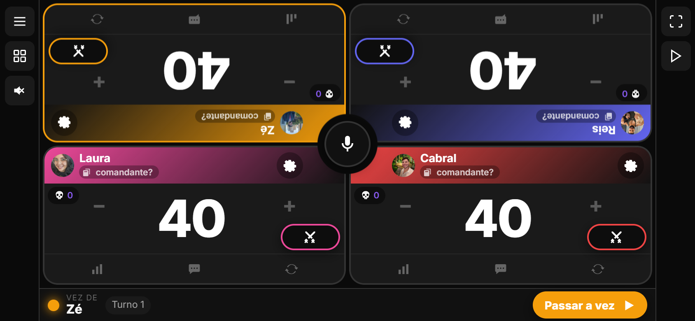
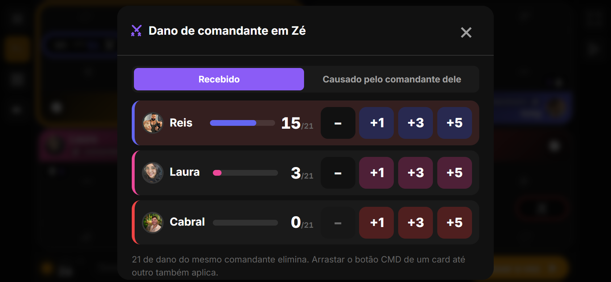

10. Trocar de lugar: engrenagem e Lugares
O arrasto pela foto saiu. Agora tem dois jeitos claros: na engrenagem do card, o bloco "Trocar de lugar com" lista os outros jogadores, um toque troca; e em Configurações › Mesa › Lugares aparece o mapa da mesa como ela está na tela, toque em um jogador e depois no lugar de outro. Nos dois casos as rotações do modo mesa são refeitas.
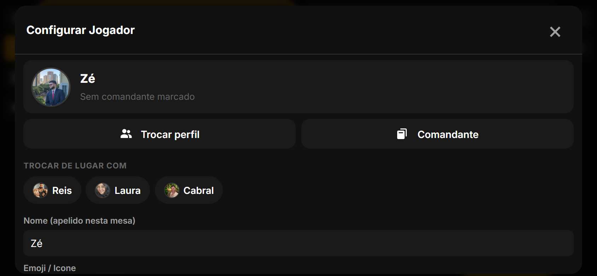
11. Configurações reorganizadas
As quatro abas foram redistribuídas pelo que você faz com elas:
| Aba | O que tem |
|---|---|
| Partida | Tempo de partida, amistosa, Encerrar partida em destaque com "Nova partida" e "Resetar vidas" ao lado; Quem começa (todos os sorteios, quem começou nas últimas partidas e a animação do sorteio); Modo de jogo; Timer por turno. |
| Mesa | Layout e modo mesa; Lugares (novo); Comandante; Toque (toque longo, vibrar, mostrar o microfone). |
| Visual | Tema primeiro, depois Cards (tamanhos, só vida, eliminado encolhe, descanso de tela), Visual e GIFs. |
| Som | Áudio, música, narrador, escandalosa. |
Encerrar partida também ganhou um caminho explícito pra fechar sem salvar: no pódio manual, o botão virou "Encerrar sem contar pro ranking" e de fato encerra a mesa (antes só fechava a janela e a partida continuava aberta). O X volta pra mesa como estava.
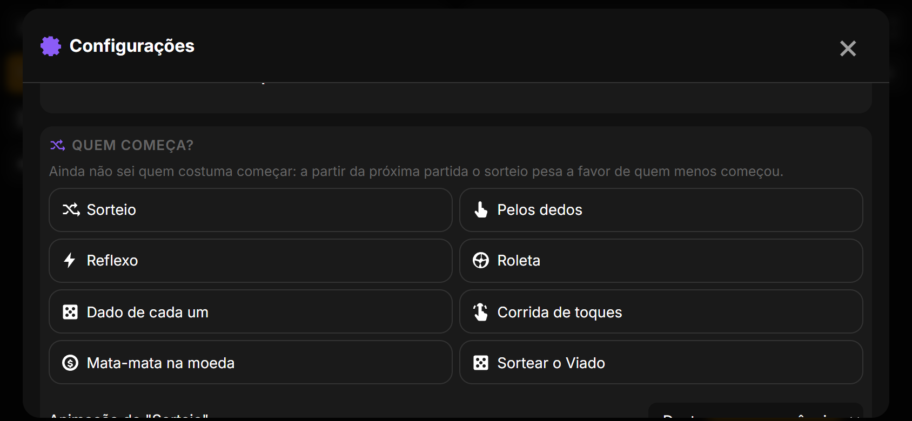
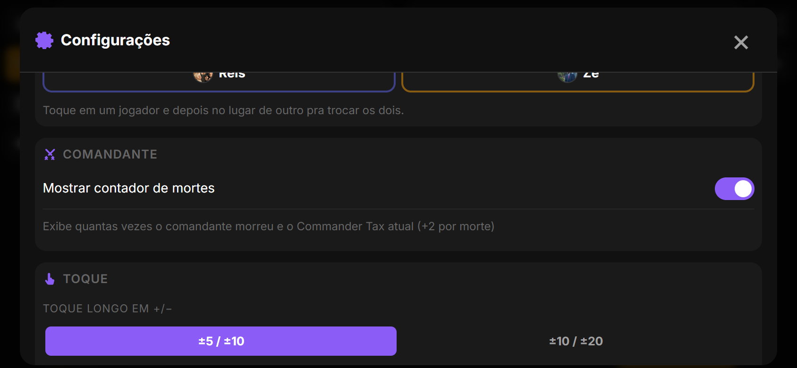
12. Microfone: fora dos cards e com opção de ocultar
Em mesas de 5 (3 em cima, 2 embaixo) o centro da tela cai em cima de um card, e o microfone ficava sobre a foto de alguém. Agora ele procura o cruzamento de vãos mais perto do centro que não cai em card nenhum, preferindo o encontro de quatro cantos. Em 2×2 continua no centro.
E dá pra ocultar o microfone: no setup ("Botão do microfone no meio da mesa") e em Configurações › Mesa › Toque, no meio da partida. Sem ele, os cards ficam inteiros, sem recorte; o comando de voz mãos livres continua em Ferramentas.
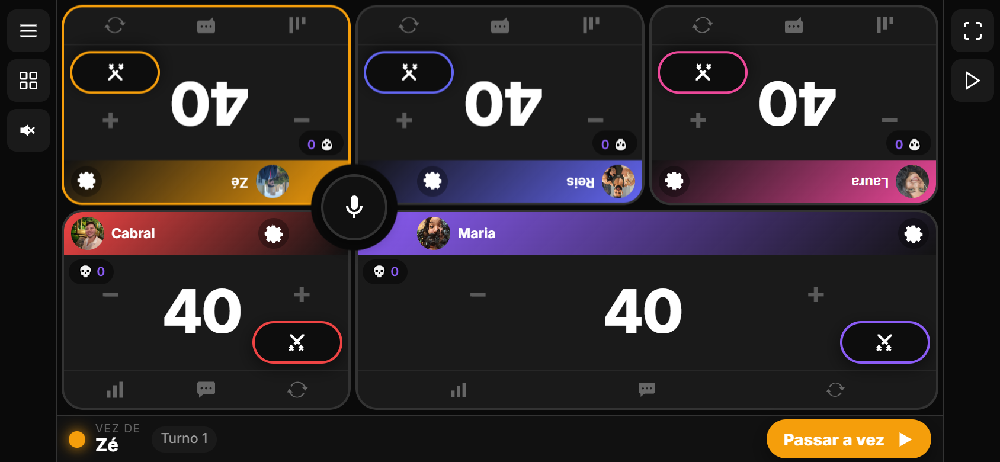

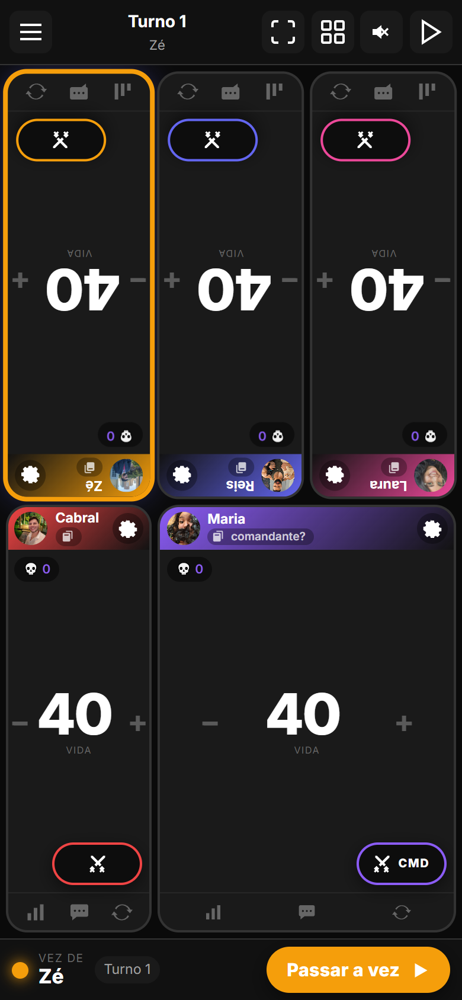
13. Nos bastidores e como atualizar
| Onde | O que mudou |
|---|---|
| Partida (servidor) | starter_profile_id na partida e death_cause em cada colocação (migração 0004). O perfil devolve death_causes, kill_causes, starts e starts_rate. |
| Estado da mesa | starterPlayerId, motivo (cause) no evento de eliminação, configurações onlyLife, collapseEliminated e screenRestMinutes. Estados antigos migram sozinhos. |
| Voz | "modo só vida" / "modo completo". "Fulano matou o sicrano" já pré-preenche a pergunta ao cair. |
| Correções | Mudança de vida que elimina o jogador não dispara mais a animação no card que acabou de virar tira (erro de JS silencioso). "Encerrar sem contar pro ranking" encerra a mesa de verdade. Publicação do APK não quebra mais com avisos do gradle. |
| Testes | 27 testes do servidor; QA automatizado da mesa com 50 verificações novas (lote e ajustes), zero erros de JS. |
Como atualizar. No Android, o app avisa ao abrir e instala com um toque (ou Configurações › Atualização). No navegador basta recarregar; o site já está na 2.5.0.